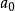
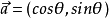

单位向量是指模等于1的向量。由于是非零向量，单位向量具有确定的方向。单位向量有无数个。
- 中文名
- 单位向量
- 外文名
- Unit Vector
- 学 科
- 数理科学
- 类 型
- 数学术语
- 特 点
- 模等于1
- 向 量
- 具有大小和方向的一个量
单位向量向量
编辑在数学中，向量（也称为欧几里得向量、几何向量、矢量），指具有大小（magnitude）和方向的量。它可以形象化地表示为带箭头的线段。箭头所指：代表向量的方向；线段长度：代表向量的大小。与向量对应的只有大小，没有方向的量叫做数量（物理学中称标量）。
向量的记法：印刷体记作粗体的字母（如a、b、u、v），书写时在字母顶上加一小箭头“→”。
[1]
如果给定向量的起点（A）和终点（B），可将向量记作AB（并于顶上加→）。在空间直角坐标系中，也能把向量以数对形式表示，例如Oxy平面中(2,3)是一向量。
在物理学和工程学中，几何向量更常被称为矢量。许多物理量都是矢量，比如一个物体的位移，球撞向墙而对其施加的力等等。与之相对的是标量，即只有大小而没有方向的量。一些与向量有关的定义亦与物理概念有密切的联系，例如向量势对应于物理中的势能。
几何向量的概念在线性代数中经由抽象化，得到更一般的向量概念。此处向量定义为向量空间的元素，要注意这些抽象意义上的向量不一定以数对表示，大小和方向的概念亦不一定适用。因此，平日阅读时需按照语境来区分文中所说的"向量"是哪一种概念。不过，依然可以找出一个向量空间的基来设置坐标系，也可以透过选取恰当的定义，在向量空间上介定范数和内积，这允许我们把抽象意义上的向量类比为具体的几何向量。
单位向量简介
编辑一个单位向量的平面直角坐标系上的坐标表示可以是：(n,k) ，则有n²+k²=1。其中k/n就是原向量在这个坐标系内的所在直线的斜率。这个向量是它所在直线的一个单位方向向量。不同的单位向量，是指它们的方向不同。对于任意一个非零向量a，与它同方向的单位向量记作

。单位向量性质
编辑单位向量说来简单，但是可以总结出一些招人喜欢的性质，应用恰当，会给解题带来方便。与单位向量有关的性质如下:
（1）单位向量的长度为1个单位，方向不受限制.
（2）起点为原点的单位向量，终点分布在单位圆上，常可设为

，反之亦然。单位向量例题
编辑例1，已知
，求
的值。
例2，在三角形ABC中，D在AB上，CD平分角ACB，若
、
，
,
则
等于？
有上述性质（4）可得，
。
- 参考资料
词条标签：